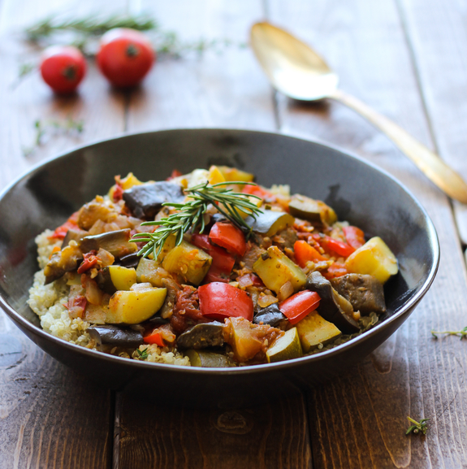
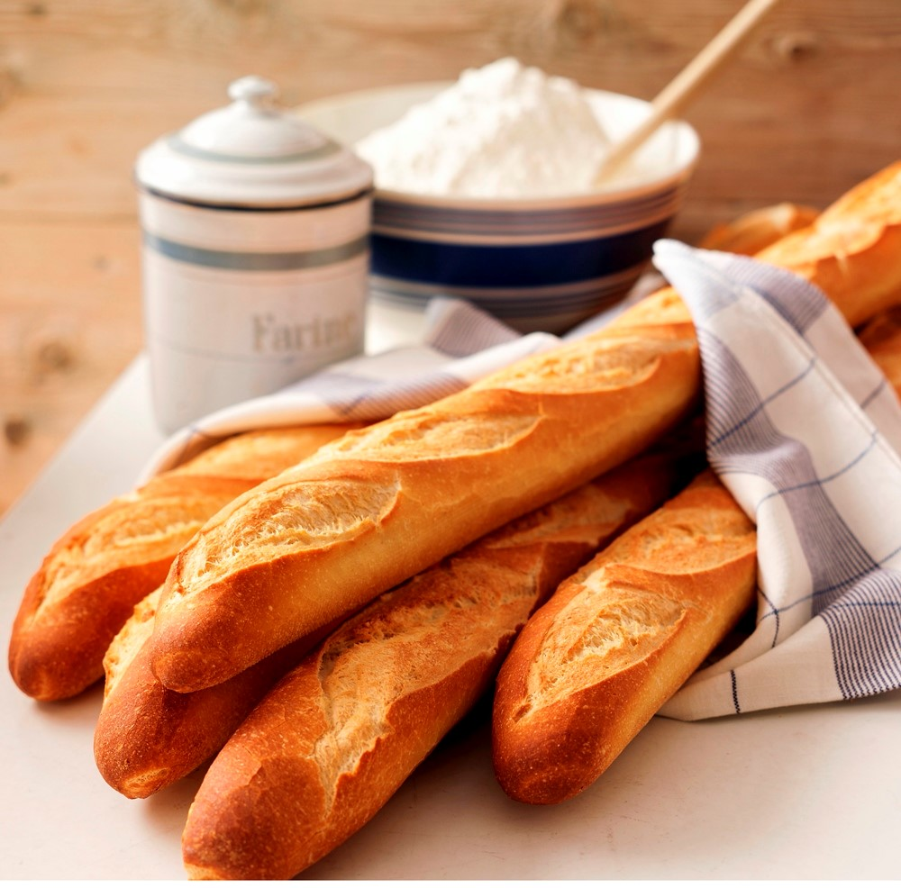

La gastronomía francesa es una de las mejores del mundo. Si te estás preguntando qué comer en Francia y cuáles son los platos típicos de la gastronomía francesa, hay muchísimas recetas deliciosas que puedes probar en un viaje a tierras galas.
Aquí te mostramos estos platos típicos franceses:
Quiche Lorraine
Es típica de la región de Alsacia y consiste en una tarta salada hecha con pasta brisa, salsa de crema de leche y huevo (migaine) aromatizada con nuez moscada y pimienta, a la que se le añaden trocitos de panceta. Hoy en día hay infinidad de variantes de quiche lorraine y se pueden encontrar tartas saladas para todos los gustos.
Representación del platillo Quiche Lorraine
Crepes
¿Quién no ha comido nunca una crepe? Son deliciosas y en Francia aún más: hay versión dulce (como la de azúcar, de nata y fresas…) o salada (como la de jamón y queso). Los sacarán de apuros en más de una ocasión ya que son una de las comidas más ricas y baratas de toda Francia.
Representación del postre Crepes
Ratatouille
Uno de los platos franceses más populares. Se trata de una receta de vegetales guisados, similar al pisto, aunque mejor nos dejamos las comparaciones a un lado! Se suele aromatizar con especias y hierbas provenzales, dándole un característico sabor a campo. Puede servirse como primer plato o como guarnición de carnes y pescados. Es originario de la región de Provenza.

Representación del platillo Rataouille
Baguettes y quesos
La baguette no es un simple pan. No, no, no. Crujiente, sabrosa, calentita: una baguette preparada bien es un bocadito de paraíso y en Francia no es difícil encontrar lugares que las preparen bien. Y ya que la tienes, lo mejor es improvisar un picnic con otro producto estrella: el queso.

Representación de los Baguettes